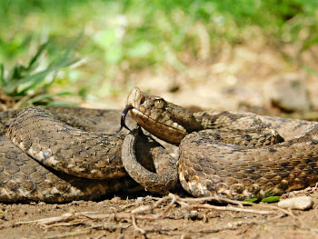

Fauna reptil local de españa
Lagarto Ocelado (Timon lepidus)
- Es uno de los lagartos más grandes de Europa, pudiendo alcanzar hasta 70 cm de longitud.
- Se encuentra en zonas mediterráneas, bosques y matorrales.
- Es omnívoro: se alimenta de insectos, frutas y pequeños vertebrados.
Culebra Bastarda (Malpolon monspessulanus)
- Es la serpiente más grande de la península ibérica, pudiendo superar los 2 metros de longitud.
- Es venenosa, pero su mordedura no es peligrosa para los humanos.
- Se alimenta de roedores, aves y otros reptiles
Tortuga Mora (Testudo graeca)
- Es una especie protegida debido a la pérdida de su hábitat y el comercio ilegal.
- Habita en zonas secas y áridas del sureste de España.
- Es herbívora y se alimenta de plantas, flores y frutas.

Víbora Hocicuda (Vipera latastei)
- Es una serpiente venenosa, pero rara vez representa un peligro para los humanos.
- Se encuentra en zonas rocosas y boscosas de la península ibérica.
- Se alimenta de pequeños mamíferos, lagartijas y aves.
Lagartija Colirroja (Acanthodactylus erythrurus)
- Es común en dunas y zonas costeras del sur de España.
- Es muy ágil y se mueve rápidamente para escapar de depredadores.
- Se alimenta de insectos y arañas.